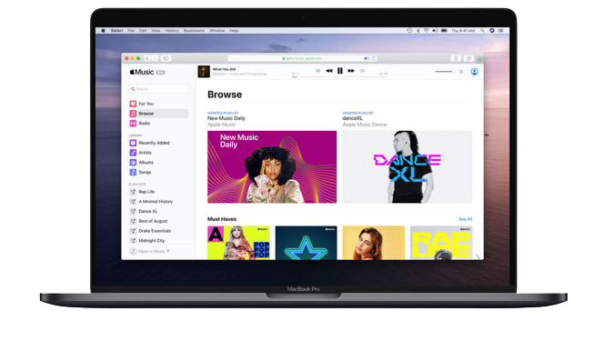
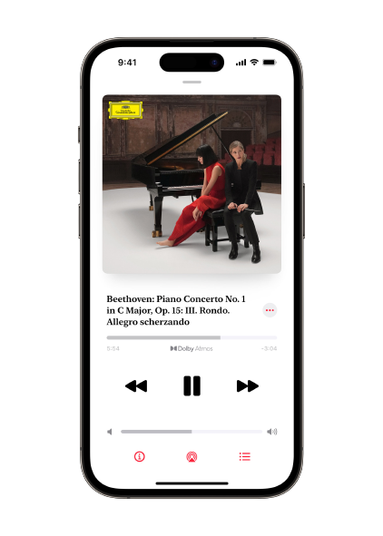

Apple Music est un service de streaming révolutionnaire et une application qui met à portée de main, sur vos appareils préférés, l’intégralité du catalogue d’Apple Music. À commencer par celle que vous connaissez déjà, issue de l’iTunes Store ou extraite de vos CD, votre musique est désormais à un seul endroit aux côtés du catalogue Apple Music avec plus de 30 millions de titres. Vous pouvez diffuser en continu la chanson, l'album ou la playlist de votre choix, ou même mieux : laisser Apple Music le faire pour vous.

La sélection est au cœur même de toutes les playlists créées sur Apple Music. Apple a recruté les experts en musique les plus talentueux au monde. Leur mission est de créer les playlists parfaites d’après vos préférences, et plus vous écoutez de musique, meilleurs partenaires ils deviennent. La section « For You » d’Apple Music vous propose un tout nouveau choix d’albums, de nouvelles sorties et de nouvelles playlists, le tout personnalisé pour vous seul.
 Apple Music
Apple Music